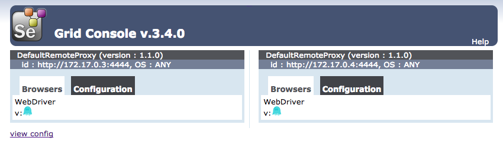

<!DOCTYPE HTML>
<html>
<head><meta name="generator" content="Hexo 3.9.0">
  <meta charset="utf-8">
  <meta http-equiv="X-UA-Compatible" content="IE=edge">
  <meta name="apple-mobile-web-app-capable" content="yes">
  <meta name="apple-mobile-web-app-status-bar-style" content="black">
  <meta name="google-site-verification" content>
  
  <title>面向开发的测试技术（三）：Web自动化测试</title>
  <meta name="author" content="Emac">
   <meta name="description" content="引子：自上世纪末Kent Beck提出TDD(Test-Driven Development)开发理念以来，开发和测试的边界变的越来越模糊，从原本上下游的依赖关系，逐步演变成你中有我、我中有你的互赖关系，甚至很多公司设立了新的QE(Quality Engineer)职位。和传统的QA(Quality">
  

  <meta property="og:title" content="面向开发的测试技术（三）：Web自动化测试">
  <meta name="viewport" content="width=device-width, initial-scale=1, maximum-scale=1">
  <meta property="og:site_name" content="Emac">
 <meta property="og:image" content="undefined">
  
  <link href="/apple-touch-icon-precomposed.png" sizes="180x180" rel="apple-touch-icon-precomposed">
  <link rel="alternate" href="/atom.xml" title="Emac" type="application/atom+xml">
  <link rel="stylesheet" href="//cdn.bootcss.com/bootstrap/3.3.6/css/bootstrap.min.css">
  <link rel="stylesheet" href="//cdn.bootcss.com/font-awesome/4.5.0/css/font-awesome.min.css">
  <link rel="stylesheet" href="/css/m.min.css">
  <link rel="icon" type="image/x-icon" href="/favicon.ico">
</head>
</html>
<body>
  <div id='wx_pic' style='display:none;'></div>
  <div id="main">
    <div class="behind">
      <div class="back">
        <a href="/" class="black-color"><i class="fa fa-times" aria-hidden="true"></i></a>
      </div>
      <div class="description">
        &nbsp;拾贝
      </div>
    </div>
    <div class="container">
      

  <article class="standard post">
    <div class="title">
      
  
    <h1 class="page-title center">
        面向开发的测试技术（三）：Web自动化测试
    </h1>
  


    </div>
    <div class="meta center">
      
<time datetime="2017-05-14T16:00:00.000Z">
  <i class="fa fa-calendar"></i>&nbsp;
  2017-05-15
</time>


    
    &nbsp;
    <i class="fa fa-tag"></i>&nbsp;
    <a href="/categories/arch/">arch</a>


    
    &nbsp;
    <i class="fa fa-tag"></i>&nbsp;
    <a href="/tags/原创/">原创</a>·<a href="/tags/测试/">测试</a>


    </div>
    <hr>
    <div class="picture-container">
      
    </div>
    <blockquote>
<p>引子：自上世纪末Kent Beck提出<a href="https://en.wikipedia.org/wiki/Test-driven_development" target="_blank" rel="noopener">TDD(Test-Driven Development)</a>开发理念以来，开发和测试的边界变的越来越模糊，从原本上下游的依赖关系，逐步演变成你中有我、我中有你的互赖关系，甚至很多公司设立了新的QE(Quality Engineer)职位。和传统的QA(Quality Assurance)不同，QE的主要职责是通过工程化的手段保证项目质量，这些手段包括但不仅限于编写单元测试、集成测试，搭建自动化测试流程，设计性能测试等。可以说，QE身上兼具了QA的质量意识和开发的工程能力。我会从开发的角度分三期聊聊QE这个亦测试亦开发的角色所需的基本技能。</p>
<p>前情概要：</p>
<ul>
<li><a href="http://emacoo.cn/arch/test-mock">面向开发的测试技术（一）：Mock</a></li>
<li><a href="http://emacoo.cn/arch/test-performance">面向开发的测试技术（二）：性能测试</a></li>
</ul>
</blockquote>
<h2 id="1-QE的成人礼：从功能测试到自动化测试"><a href="#1-QE的成人礼：从功能测试到自动化测试" class="headerlink" title="1 QE的成人礼：从功能测试到自动化测试"></a>1 QE的成人礼：从功能测试到自动化测试</h2><p>作为QE三部曲的最后一篇，这篇我们聊一下Web自动化测试。相比于前两篇Mock技术和性能测试，自动化测试可以说是最接近传统功能测试（也即手工测试）的一种测试技术，也可以说是区分QE和QA的分水岭。而Web自动化测试作为最常见的一类自动化测试，相关的资料和工具也是最丰富的。</p>
<h2 id="2-自动化测试的利弊"><a href="#2-自动化测试的利弊" class="headerlink" title="2 自动化测试的利弊"></a>2 自动化测试的利弊</h2><p>在介绍具体的Web自动化测试技术之前，首先看一下自动化测试和功能测试的区别。在我看来，两者最大的区别在于测试人员身份的不同。在功能测试中，测试人员既要设计测试用例，又要运行手工测试，既是导演又是演员，既是教练又是球员。而在自动化测试中，演员和球员的角色都被机器所取代，测试人员只负责设计测试用例和编写自动化测试脚本。除此之外，相对于功能测试，自动化测试的不同还包括：</p>
<h3 id="2-1-自动化测试的优势"><a href="#2-1-自动化测试的优势" class="headerlink" title="2.1 自动化测试的优势"></a>2.1 自动化测试的优势</h3><ul>
<li>更快的测试速度，带来更高的测试效率。一般而言，运行一遍功能测试都要以小时为单位，有的甚至以天为单位。而自动化测试则一般都在分钟级别，如果运行在分布式环境下，甚至可以降到秒级。由此可见，通过自动化测试，测试人员可以省去大量的手工测试时间，从而有更多时间去熟悉业务和完善测试用例，在提高自身测试效率的同时，也有助于提升整体的软件质量。</li>
<li>提高测试覆盖率。要理解这一点，首先要从<a href="http://www.jianshu.com/p/ab31fef12f2f" target="_blank" rel="noopener">正交测试法</a>说起。假设一个测试场景涉及3个测试因素，每个测试因素有3种可能的取值（水平），那么根据正交测试法，总共需要设计8个（<code>因素数*(最大水平数-1)+1</code>）测试用例。测试场景越复杂，所需的测试用例越多。当测试场景的复杂度超过一定程度后，纯手工的功能测试显然就无力覆盖所有的测试用例了，并且随着复杂度的升高，测试覆盖率会越来越低。然而，借助自动化测试脚本，无论测试场景多复杂，都能保证一定的测试覆盖率。</li>
<li>更好的稳定性和可扩展性。功能测试靠人，自动化测试靠机器，因此，无论是运行测试的稳定性，还是测试能力的可扩展性（比如从测试1个应用变为测试10个应用），自动化测试都远超功能测试。</li>
</ul>
<p>根据上面的描述，你就不难推导出自动化测试适用的测试场景了：</p>
<ul>
<li>回归测试。每一次应用发布，都伴随着一次回归测试。对于重复性的工作，机器显然更适合。</li>
<li>兼容性测试。不管是Web测试，还是App测试，兼容性测试都是必不可少的一环。以Web测试为例，同样的测试用例，需要在不同的浏览器上分别运行一遍，这对测试人员而言不可谓不是一种折磨。</li>
<li>大规模测试。如果一次测试涉及的测试用例过多（比如100+），功能测试难免会有遗漏或者重复，而自动化测试可以轻松确保一个不少，一个也不多。</li>
</ul>
<p>一图以蔽之，自动化测试的优势可概括为下图：</p>
<p></p>
<h3 id="2-2-自动化测试的局限"><a href="#2-2-自动化测试的局限" class="headerlink" title="2.2 自动化测试的局限"></a>2.2 自动化测试的局限</h3><p>说了这么多自动化测试的好处，但自动化测试也不是万能的，再来看一下它的局限所在：</p>
<ul>
<li>不低的技术门槛。不论是使用哪种自动化测试框架，对于测试人员而言，都存在一定的技术门槛，一般至少需要学习并掌握一门编程语言。</li>
<li>可观的开发成本和维护成本。跟任何程序一样，无论是编写自动化测试脚本，还是在需求变化时修改脚本，都需要花费大量的时间。</li>
<li>需求要稳定。自动化测试的前提是测试用例要稳定，而测试用例稳定的前提是需求要稳定。对于临时的或者说一次性的需求，自动化测试往往是得不偿失的。</li>
<li>应用周期长。应用的生命周期越长，自动化测试节省的时间越多，带来的价值也越大。</li>
</ul>
<p>应该说，功能测试是自动化测试的基础，自动化测试是功能测试的补充，两者相互依赖，又相互促进。测试人员两手都要抓，两手都要硬。</p>
<h2 id="3-如何进行Web自动化测试？"><a href="#3-如何进行Web自动化测试？" class="headerlink" title="3 如何进行Web自动化测试？"></a>3 如何进行Web自动化测试？</h2><p>接下来我以<a href="http://www.seleniumhq.org/" target="_blank" rel="noopener">Selenium</a>为例，介绍一下如何进行Web自动化测试。</p>
<h3 id="3-1-Selenium简介"><a href="#3-1-Selenium简介" class="headerlink" title="3.1 Selenium简介"></a>3.1 Selenium简介</h3><p>Selenium是目前最流行的Web自动化测试框架之一，支持主流的浏览器和操作系统，同时支持多种编程语言接入。无论是测试，还是开发，都可以轻松上手。最新的版本是3.4.0。</p>
<p>同类的Web自动化测试框架还有：</p>
<ul>
<li>开源：<a href="https://watir.com/" target="_blank" rel="noopener">Watir</a>, <a href="http://www.sikuli.org/" target="_blank" rel="noopener">Sikuli</a>, <a href="http://www.fitnesse.org/" target="_blank" rel="noopener">FitNess</a></li>
<li>商业：<a href="https://saas.hpe.com/en-us/software/uft" target="_blank" rel="noopener">HP UFT(QTP)</a>, <a href="https://www.ibm.com/developerworks/downloads/r/rft/" target="_blank" rel="noopener">IBM RFT</a></li>
</ul>
<p></p>
<p><em>图片出处：<a href="https://www.edureka.co/testing-with-selenium-webdriver" target="_blank" rel="noopener">https://www.edureka.co/testing-with-selenium-webdriver</a></em></p>
<h4 id="组成"><a href="#组成" class="headerlink" title="组成"></a>组成</h4><ul>
<li>Selenium IDE: 一款Firefox插件，以图形化方式支持录制脚本、自动生成脚本等功能。用于本地开发和调试TC（Test Case）。</li>
<li>Selenium WebDriver: 通过各浏览器厂商提供的原生Driver，指挥浏览器进行各类页面操作。</li>
</ul>
<p></p>
<p><em>图片出处：<a href="https://www.slideshare.net/sethmcl/join-the-darkside-nightwatchjs" target="_blank" rel="noopener">Join the darkside: Selenium testing with Nightwatch.js</a></em></p>
<ul>
<li>Selenium RC（已废弃）: 通过植入统一的JS脚本，指挥浏览器进行各类页面操作。兼容性比较差，2.0以后已废弃。</li>
<li>Selenium Grid: 适用于分布式环境下运行大量的TC，Hub根据TC的环境要求分发给各个符合条件的Node执行。</li>
</ul>
<p></p>
<p><em>图片出处：<a href="https://www.slideshare.net/sethmcl/join-the-darkside-nightwatchjs" target="_blank" rel="noopener">Join the darkside: Selenium testing with Nightwatch.js</a></em></p>
<h4 id="特性"><a href="#特性" class="headerlink" title="特性"></a>特性</h4><ul>
<li>多浏览器支持：除了三大浏览器Firefox, Chrome, IE之外，还支持Android, iOS内置的浏览器。</li>
<li>多平台支持：三大操作系统Linux, Mac, Windows上面都可以运行。</li>
<li>多语言支持：可以用Python, Java, Node, Ruby等编写TC。</li>
<li>录制脚本（仅限IDE）：记录Firefox上的各类页面操作，自动生成HTML格式的TC。</li>
<li>自动生成脚本（仅限IDE）：将录制的HTML格式的TC转化成任意其他语言的TC。</li>
<li>Headless：支持在命令行下，执行各类TC脚本。</li>
<li>分布式支持：通过Selenium Grid将TC分发到各个节点执行。</li>
</ul>
<h3 id="3-2-入门：Selenium-IDE"><a href="#3-2-入门：Selenium-IDE" class="headerlink" title="3.2 入门：Selenium IDE"></a>3.2 入门：Selenium IDE</h3><p>首先安装Firefox，然后下载<a href="https://addons.mozilla.org/en-US/firefox/addon/selenium-ide/" target="_blank" rel="noopener">Selenium IDE插件</a>。通过Firefox的Tools-&gt;Selenium IDE菜单项可以启动Selenium IDE，操作界面如下：</p>
<p></p>
<p>使用Selenium IDE生成自动化测试脚本的一般步骤是：</p>
<ol>
<li>选择Action-&gt;Record菜单项或者点击右上角的小红点录制原始测试脚本</li>
<li>以调试模式运行脚本-查看日志-修改脚本直至脚本可以稳定的运行</li>
<li>保存测试脚本（仅限IDE运行）或者通过File-&gt;Export Test Suites As…菜单项导出其他语言的测试脚本（可在命令行下运行）</li>
</ol>
<p>进一步信息可以参考<a href="http://www.seleniumhq.org/docs/02_selenium_ide.jsp" target="_blank" rel="noopener">官方文档</a>。</p>
<h3 id="3-3-进阶：Selenium-WebDriver"><a href="#3-3-进阶：Selenium-WebDriver" class="headerlink" title="3.3 进阶：Selenium WebDriver"></a>3.3 进阶：Selenium WebDriver</h3><p>以Python3 + Firefox为例，</p>
<p>1) 命令行下运行<code>pip install selenium==3.3.0</code>安装selenium</p>
<ul>
<li>由于最新版的Selenium Python package<a href="https://github.com/SeleniumHQ/selenium/issues/3808" target="_blank" rel="noopener">不支持Grid</a>，只能降级安装3.3.0版本</li>
</ul>
<p>2) 下载<a href="https://github.com/mozilla/geckodriver/releases" target="_blank" rel="noopener">Mozilla GeckoDriver</a>，解压然后添加到系统Path</p>
<p>准备就绪后，打开命令行，试着运行之前从Selenium IDE导出的Python测试脚本，也可以直接手写脚本。</p>
<p>示例脚本：</p>
<figure class="highlight python"><table><tr><td class="gutter"><pre><span class="line">1</span><br><span class="line">2</span><br><span class="line">3</span><br><span class="line">4</span><br><span class="line">5</span><br><span class="line">6</span><br><span class="line">7</span><br><span class="line">8</span><br><span class="line">9</span><br><span class="line">10</span><br><span class="line">11</span><br><span class="line">12</span><br><span class="line">13</span><br><span class="line">14</span><br><span class="line">15</span><br><span class="line">16</span><br></pre></td><td class="code"><pre><span class="line"><span class="keyword">from</span> selenium <span class="keyword">import</span> webdriver</span><br><span class="line"><span class="keyword">from</span> selenium.webdriver.common.keys <span class="keyword">import</span> Keys</span><br><span class="line"><span class="keyword">from</span> selenium.webdriver.support.ui <span class="keyword">import</span> WebDriverWait</span><br><span class="line"><span class="keyword">from</span> selenium.webdriver.support <span class="keyword">import</span> expected_conditions <span class="keyword">as</span> EC</span><br><span class="line"></span><br><span class="line">browser = webdriver.Firefox()</span><br><span class="line">browser.get(<span class="string">'http://www.baidu.com/'</span>)</span><br><span class="line"><span class="keyword">assert</span> <span class="string">'百度一下，你就知道'</span> == browser.title</span><br><span class="line">kw = browser.find_element_by_id(<span class="string">"kw"</span>);</span><br><span class="line">kw.send_keys(<span class="string">'selenium'</span>)</span><br><span class="line">kw.send_keys(Keys.RETURN)</span><br><span class="line"></span><br><span class="line">WebDriverWait(browser, <span class="number">10</span>).until(EC.title_contains(<span class="string">'selenium_百度搜索'</span>))</span><br><span class="line"><span class="keyword">assert</span> browser.find_element_by_css_selector(<span class="string">"div.nums"</span>).is_displayed()</span><br><span class="line">print(<span class="string">"Test pass!"</span>)</span><br><span class="line">browser.quit()</span><br></pre></td></tr></table></figure>
<p>进一步信息可以参考<a href="http://www.seleniumhq.org/docs/03_webdriver.jsp" target="_blank" rel="noopener">官方文档</a>和<a href="https://seleniumhq.github.io/selenium/docs/api/py/api.html" target="_blank" rel="noopener">Selenium Python API</a>。</p>
<h3 id="3-4-高阶：Selenium-Grid"><a href="#3-4-高阶：Selenium-Grid" class="headerlink" title="3.4 高阶：Selenium Grid"></a>3.4 高阶：Selenium Grid</h3><p>前面提到，使用Selenium Grid可以轻松搭建一个分布式的自动化测试环境，特别适合运行大规模的测试用例和兼容性测试（各个节点运行不同的WebDriver）。</p>
<p>利用官方提供的<a href="https://hub.docker.com/u/selenium/" target="_blank" rel="noopener">Docker镜像</a>，可以在本地启动多个容器来搭建一个Selenium Grid环境，以2个运行<a href="http://phantomjs.org/" target="_blank" rel="noopener">phantomjs</a> WebDriver的节点的Grid为例：</p>
<ol>
<li>启动Hub: docker run -d -p 4444:4444 –name hub selenium/hub</li>
<li>启动Node-1: docker run -d –link hub:hub –name pnode1 selenium/node-phantomjs</li>
<li>启动Node-2: docker run -d –link hub:hub –name pnode2 selenium/node-phantomjs</li>
</ol>
<p>等所有容器成功启动之后，打开浏览器访问<code>http://&lt;ip-of-local-docker-machine:4444&gt;</code>，就可以看到Selenium Grid的控制台了。</p>
<p></p>
<p>然后修改测试脚本指向本地Selenium Grid的服务地址，就可以通过Selenium Grid运行测试了。</p>
<figure class="highlight python"><table><tr><td class="gutter"><pre><span class="line">1</span><br><span class="line">2</span><br><span class="line">3</span><br><span class="line">4</span><br></pre></td><td class="code"><pre><span class="line">browser = webdriver.Remote(</span><br><span class="line">	command_executor=<span class="string">"http://192.168.99.100:4444/wd/hub"</span>, </span><br><span class="line">	desired_capabilities=&#123;<span class="string">'browserName'</span>: <span class="string">'phantomjs'</span>&#125;)</span><br><span class="line">browser.implicitly_wait(<span class="number">30</span>)</span><br></pre></td></tr></table></figure>
<p>进一步信息信息参考<a href="http://www.seleniumhq.org/docs/07_selenium_grid.jsp" target="_blank" rel="noopener">官方文档</a>和<a href="https://github.com/SeleniumHQ/selenium/wiki/Grid2" target="_blank" rel="noopener">Wiki</a>。</p>
<h2 id="4-小结"><a href="#4-小结" class="headerlink" title="4 小结"></a>4 小结</h2><p>以上就是我对自动化测试的一些见解，欢迎你到我的<a href="https://github.com/emac/emac.github.io/issues/2" target="_blank" rel="noopener">留言板</a>分享，和大家一起过过招。</p>
<p>至此，有关QE所需掌握的3个基本测试技术的介绍就告一段落。无论是Mock，还是性能测试，自动化测试，本质上都只有一个目的，解放测试人员的生产力，让测试人员回归软件质量（Quality）本身。如果你想了解更多测试相关的技术，也欢迎到我的<a href="https://github.com/emac/emac.github.io/issues/2" target="_blank" rel="noopener">留言板</a>留言，以后有机会我会再聊一些这方面的话题。感谢大家的关注。</p>
<h2 id="5-参考"><a href="#5-参考" class="headerlink" title="5 参考"></a>5 参考</h2><ul>
<li><a href="http://www.jianshu.com/p/ab31fef12f2f" target="_blank" rel="noopener">软件测试正交测试法</a></li>
<li><a href="https://www.slideshare.net/cuelogic/automation-testing-by-selenium-web-driver" target="_blank" rel="noopener">Automation Testing by Selenium Web Driver</a></li>
<li><a href="https://www.slideshare.net/tourdedave/selenium-tips-tricks" target="_blank" rel="noopener">Selenium Tips &amp; Tricks</a></li>
<li><a href="http://elementalselenium.com/tips" target="_blank" rel="noopener">Elemental Selenium Tips</a></li>
<li><a href="https://juejin.im/post/58ef6ab30ce463006b98f205" target="_blank" rel="noopener">腾讯云上 Selenium 用法示例</a></li>
<li><a href="https://mp.weixin.qq.com/s?__biz=MzA5OTAyNzQ2OA%3D%3D&amp;ascene=0&amp;idx=1&amp;mid=2649693775&amp;mpshare=1&amp;nettype=WIFI&amp;pass_ticket=vadG8dJ4VDRY%2Fw2OgMlLPch1Nj6uN9CVB4qRTfudvz6y97RV%2BH%2FB0hjqhbGg3MiH&amp;sn=5b91936d398309b29ab5c0f6025d0b6c" target="_blank" rel="noopener">Docker环境下运行Python + Selenium + Chrome</a></li>
</ul>


  </article>
  </script>


    </div>
  </div>
  <footer class="page-footer"><div class="clearfix">
</div>
<div class="right-foot container">
    <div class="firstrow">
        <a href="#top" >
        <i class="fa fa-arrow-right"></i>
        </a>
        © emacoo.cn 2015-2022
    </div>
    <div class="secondrow">
        <a href="https://github.com/gaoryrt/hexo-theme-pln">
        
        </a>
    </div>
</div>
<div class="clearfix">
</div>
<script async src="//busuanzi.ibruce.info/busuanzi/2.3/busuanzi.pure.mini.js"></script>
<div class="busuanzi center">
    <span id="busuanzi_container_site_pv">本站总访问量<span id="busuanzi_value_site_pv"></span>次</span>
    <span id="busuanzi_container_site_uv">本站访客数<span id="busuanzi_value_site_uv"></span>人次</span>
    <span id="busuanzi_container_page_pv">
      本文总阅读量<span id="busuanzi_value_page_pv"></span>次
    </span>
</div>
</footer>
  <script src="//cdn.bootcss.com/jquery/2.2.1/jquery.min.js"></script>
<script src="/js/search.js"></script>
<script type="text/javascript">

// comments below to disable loading animation
function revealOnScroll() {
  var scrolled = $(window).scrollTop();
  $(".excerpt, .index-title, .index-meta, p").each(function() {
    var current = $(this),
      height = $(window).outerHeight(),
      offsetTop = current.offset().top;
    (scrolled + height + 50 > offsetTop) ? current.addClass("animation"):'';
  });
}
$(window).on("scroll", revealOnScroll);
$(document).ready(revealOnScroll)

// disqus scripts


// dropdown scripts
$(".dropdown").click(function(event) {
  var current = $(this);
  event.stopPropagation();
  $(current).children(".dropdown-content")[($(current).children(".dropdown-content").hasClass("open"))?'removeClass':'addClass']("open")
});
$(document).click(function(){
    $(".dropdown-content").removeClass("open");
})

// back to top scripts
$("a[href='#top']").click(function() {
  $("html, body").animate({ scrollTop: 0 }, 500);
  return false;
});


var path = "/search.xml";
searchFunc(path, 'local-search-input', 'local-search-result');

</script>

</body>
</html>
